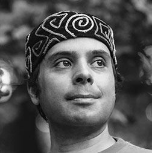

Фотоочерк «Транспортно-пересадочный пустырь».

Ростислав Чебыкин
Ближайшие концерты
-
Москва, «Свобода»
Купить билеты -
Краснодар,
Купить билеты
«The Rock Bar»
Об авторе
Статья «Чума на оба ваши тома» с ответом на вопрос «Толстой или Достоевский?».
«Кредо рандомных доцентов» о профессиональной математике.
Раздел «Статьи» выборочно перенесён со старой версии сайта. Старая версия закрыта.
В сборнике текстов и аккордов готовы 162 песни, написанные с 1994 до 2023 года. Названия песен упорядочены по алфавиту
на «Яндекс Музыке» Тексты и аккорды Поддержать автора
Организация концертов
По всем вопросам организации моих выступлений обращайтесь к директору Юлии Криспус в сообщениях ВК или в мессенджерах по номеру
+7 (925) 543-11-12Песня о Гамельнском крысолове
СлушатьТекст и аккорды…Ночью
Торопливыми шагами
Мы покинем город Гамельн!
С сайта
Архивная версия сайта наконец-то закрыта. Мне удалось прекратить противоестественное раздвоение сайта, которое продолжалось три года, и аккумулировать хотя бы самые существенные сочинения в одном месте.
В обновлённый раздел «Статьи» я перенёс только тот контент, который прошёл проверку временем. Сейчас я прежде всего фокусируюсь на том, чтобы разместить тексты с аккордами хотя бы тех песен, которые сам исполняю на концертах. Эта задача оказалась замороченнее, чем я предполагал. В сборнике около 220 песен, но это всё ещё меньшая половина от запланированного.
Читать статьи